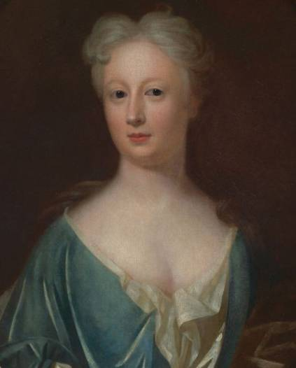

Elizabeth Jervis Porter (1689–1752) had been the wife of Johnson’s close friend Harry Porter, who died on 3 September 1734, leaving Elizabeth widowed at the age of 45, with three children. Some months later, Johnson began to court her and it is believed the widow encouraged him by promising to provide for him with her substantial savings.